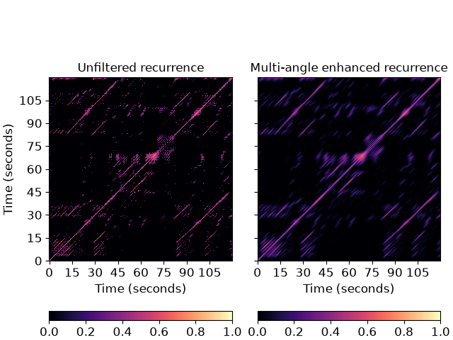

librosa.segment.path_enhance
- librosa.segment.path_enhance(R, n, *, window='hann', max_ratio=2.0, min_ratio=None, n_filters=7, zero_mean=False, clip=True, **kwargs)[source]
Multi-angle path enhancement for self- and cross-similarity matrices.
This function convolves multiple diagonal smoothing filters with a self-similarity (or recurrence) matrix R, and aggregates the result by an element-wise maximum.
Technically, the output is a matrix R_smooth such that:
R_smooth[i, j] = max_theta (R * filter_theta)[i, j]
where * denotes 2-dimensional convolution, and
filter_thetais a smoothing filter at orientation theta.This is intended to provide coherent temporal smoothing of self-similarity matrices when there are changes in tempo.
Smoothing filters are generated at evenly spaced orientations between min_ratio and max_ratio.
This function is inspired by the multi-angle path enhancement of [1], but differs by modeling tempo differences in the space of similarity matrices rather than re-sampling the underlying features prior to generating the self-similarity matrix.
Note
if using recurrence_matrix to construct the input similarity matrix, be sure to include the main diagonal by setting
self=True. Otherwise, the diagonal will be suppressed, and this is likely to produce discontinuities which will pollute the smoothing filter response.- Parameters:
- Rnp.ndarray
The self- or cross-similarity matrix to be smoothed. Note: sparse inputs are not supported.
If the recurrence matrix is multi-dimensional, e.g. shape=(c, n, n), then enhancement is conducted independently for each leading channel.
- nint > 0
The length of the smoothing filter
- windowwindow specification
The type of smoothing filter to use. See filters.get_window for more information on window specification formats.
- max_ratiofloat > 0
The maximum tempo ratio to support
- min_ratiofloat > 0
The minimum tempo ratio to support. If not provided, it will default to
1/max_ratio- n_filtersint >= 1
The number of different smoothing filters to use, evenly spaced between
min_ratioandmax_ratio.If
min_ratio = 1/max_ratio(the default), using an odd number of filters will ensure that the main diagonal (ratio=1) is included.- zero_meanbool
By default, the smoothing filters are non-negative and sum to one (i.e. are averaging filters).
If
zero_mean=True, then the smoothing filters are made to sum to zero by subtracting a constant value from the non-diagonal coordinates of the filter. This is primarily useful for suppressing blocks while enhancing diagonals.- clipbool
If True, the smoothed similarity matrix will be thresholded at 0, and will not contain negative entries.
- **kwargsadditional keyword arguments
Additional arguments to pass to
scipy.ndimage.convolve
- Returns:
- R_smoothnp.ndarray, shape=R.shape
The smoothed self- or cross-similarity matrix
Examples
Use a 51-frame diagonal smoothing filter to enhance paths in a recurrence matrix
>>> y, sr = librosa.load(librosa.ex('nutcracker')) >>> hop_length = 2048 >>> chroma = librosa.feature.chroma_cqt(y=y, sr=sr, hop_length=hop_length) >>> chroma_stack = librosa.feature.stack_memory(chroma, n_steps=10, delay=3) >>> rec = librosa.segment.recurrence_matrix(chroma_stack, mode='affinity', self=True) >>> rec_smooth = librosa.segment.path_enhance(rec, 51, window='hann', n_filters=7)
Plot the recurrence matrix before and after smoothing
>>> import matplotlib.pyplot as plt >>> fig, ax = plt.subplots(ncols=2, sharex=True, sharey=True) >>> img = librosa.display.specshow(rec, x_axis='s', y_axis='s', ... hop_length=hop_length, ax=ax[0]) >>> ax[0].set(title='Unfiltered recurrence') >>> imgpe = librosa.display.specshow(rec_smooth, x_axis='s', y_axis='s', ... hop_length=hop_length, ax=ax[1]) >>> ax[1].set(title='Multi-angle enhanced recurrence') >>> ax[1].label_outer() >>> fig.colorbar(img, ax=ax[0], orientation='horizontal') >>> fig.colorbar(imgpe, ax=ax[1], orientation='horizontal')
